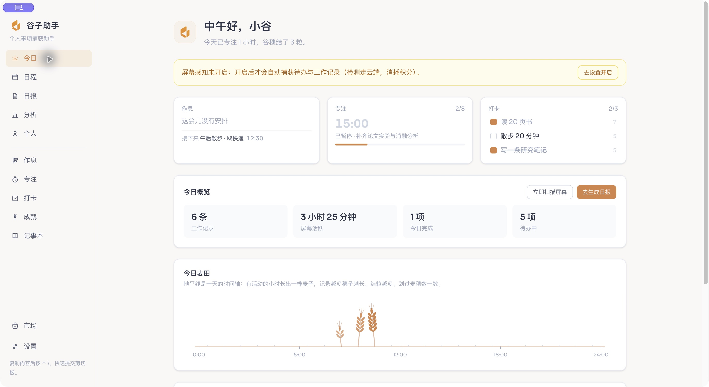
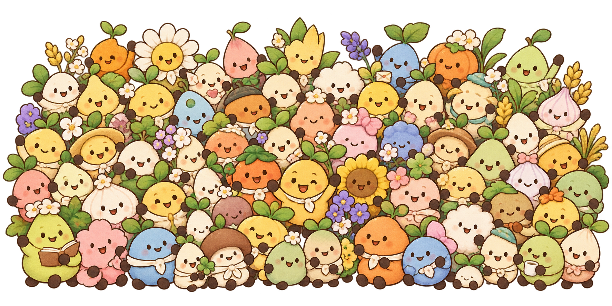

一位住在桌面上的 AI 私人助手
谁说，只有老板
才有助手。
记住属于你的事，
也关心忙碌的你。
把散落在聊天、截图和文件里的待办交给谷子。
它帮你理清、记下，再在需要的时候轻轻提醒。
Everyone deserves an assistant.

从“看见了”，到“记住了”
消息那么多，
属于你的事，别漏下。
复制一段文字、截一张图，或交给它一份文件。
谷子帮你判断归属、理清时间与事项，
标准模式下，等你确认后再加入日程。
一条消息，怎么变成一件有着落的事？
点击步骤查看，或播放这段小故事。
2026 年 10 月 30 日 · 周五
收到，我把这件事记下来。
对话为演示场景
从一段消息开始，把需要记住的事交给谷子。
虚构消息 · 谷子助手实际识别 · 截取于 2026/10/30认真投入的时间，都有迹可循。
伸个懒腰，让眼睛也放个小假。
不仅记得工作，也惦记着你
忙着向前，
也记得歇一歇。
忙起来，常常连自己都顾不上。谷子会记录活动节奏，帮你回看时间花在哪里，也在久坐之后提醒你起身活动。
今天的你，也辛苦了。
活动分析与久坐提醒可按需设置，采集也可以关闭。
五个内置插件，照顾不同的日常
把日子，过成自己的节奏。
专注的时候陪你投入，
生活的小目标，也有人一起记着。
给一天，留出自己的节奏。
用时间块安排学习、工作和休息，把顺手的一天存成模板。
在你的桌面上，就是这个样子
清晰看见，
每一件小事。
从今日待办，到日程安排，再到随手笔记。
点开看看谷子助手实际运行的样子。
专注、打卡与今日概览，清楚地放在一起。
v0.13.0 · 实际运行截图 · 内容为演示数据你的电脑
本地保存待办、笔记与活动记录
使用 AI 时，相关内容会发送给模型服务
当你请求 AI 识别或分析，相关文字、截图或文件内容会发送至所选模型服务。你可以登录使用托管服务，也可以配置自己的 OpenAI 兼容 API。费用与数据处理规则以所选服务说明为准。
给桌面添一位新伙伴
从今天起，
有个谷子惦记你。
生活里那些值得记住的事，
不用再全靠自己记着。
开始之前，你可能想知道
再多了解一点。
开始使用，需要自己配置 AI 模型吗？
你可以登录使用内置托管服务，也可以配置自己的 OpenAI 兼容 API。AI 识别与分析的相关内容会发送至所选服务，费用以相应服务说明为准。
哪些数据会发送给模型服务？
待办、笔记和活动记录保存在本地。使用 AI 识别或分析时，与该请求相关的文字、截图或文件内容会发送至你选择的托管服务或自配模型服务。请在使用前了解所选服务的数据处理规则，并按需调整采集设置。
支持哪些平台，需要什么权限？
macOS 应用适用于 Apple Silicon 芯片，需要 macOS 12 或更新版本；剪贴板自动捕获需要 macOS 15.4 或更新版本。macOS 版尚未完成 Apple 公证，首次打开请参考 版本说明中的允许打开指引 。Windows 提供 x64 安装包。截图捕获、活动感知和通知等能力可能需要相应系统权限，请按需授予。
可以关闭采集或调整提醒吗？
可以。你可以根据需要调整采集与提醒设置，关闭不需要的采集能力。标准模式会在 AI 识别出待办后请你确认，再加入日程。
